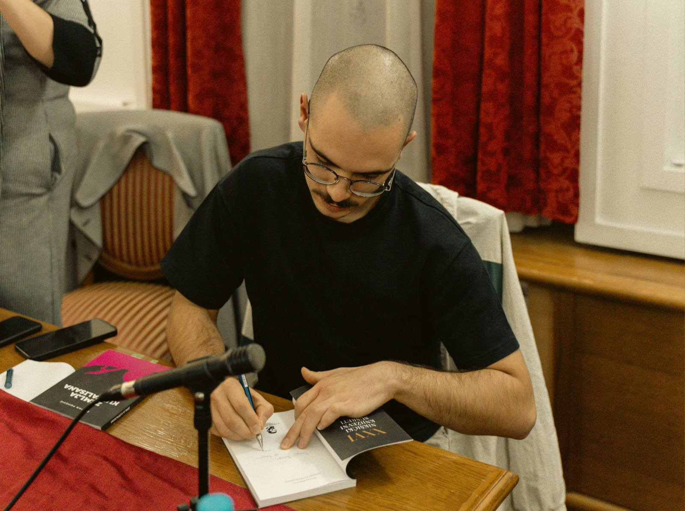

02
NESVRSTANO
Uncollected Poems

SELECTED POEMS
Izgleda kao da
Neki vozovi odlaze
U nepovrat.
Vreme preskace prostor.
U njihovom među
Ceo jedan svet
Ljubavi.
Verujem da čovek,
onaj koji hoda,
uvek stiže u vreme.
Iz prostora je teško pobeći.
Na njegovim ravnima
Ceo jedan svet
Pravih decimala.
Deca se igraju rata.
Psenicna polja
Nad popodnevnim suncem severa
Dele se na nepokretne vlati.
Sa prozora voza
Sve staje
Samo se vreme
U medjuprostoru gubi.
Tako, covek
Onaj koji hoda
Uvek je i samo
Onaj koji gleda.
* * *
I tako sam jednog kišnog dana
u Bratislavi
shvatio
da su svi fakulteti arhitekture
prepuni arhitekata.
Čini mi se neizbježnim biti ovdje.
Ne pripadati.
I biti srećan zbog toga.
Valjda.
Vreme se pojavljuje
i beži.
Grabim ga i razmišljam.
Na okukama svesti
pronalazim
sisteme mreža
preoblikovane u strasti.
Države zapinju u ponorima.
Priče o Istoku
dopiru do nas.
Kako bi bilo lepo voleti
obešenjački
Pruge u južnim gradovima.
Na njima se osećam
manje usamljeno
Na severnim je hladno
I tuđe.
Istine koje dopiru
Dopiru sa smešnih ekrana
i verujemo u neke tuđe mesečine
Sve sam vam ovo napisao
Sa namerom
Da dokažem
Da sistemske promene
Vode do
Čoveka
Njegovog raspleta
I lepote.
U prostornim sekvencama gradova
ne viđam decu
već uplakane male ljude.
Sva se mesečina zapada
meša sa lepotom istoka.
Previše dugo smo crtali tuđe gradove.
Nismo razmišljali o svojima.
Tako sam shvatio
Jednog ranog popodneva
U kišnoj Bratislavi
Da su svi fakulteti arhitekture
Prepuni crtača.
Nije ostao niko da misli.
* * *
Ovu bi prazninu mogla poneti sa sobom.
Sa vrhova međunarodne železnice
ne vidim obrise kamenih gradova.
Oni se gube u presecima senki.
Naše su ruke,
na pesku vetra
ostajale neme
i onda kad nisu bile prazne.
Ruke grade,
Ruke umeju.
Spratove.
Vrhove.
Stubove.
Čekanje.
Kako se gradi čekanje?
Na pokretnim mestima
Čovek sedi.
Arhitektura se kreće.
On ne ulazi u nju.
Žena je nema.
Žena je prazna.
Sama je
Na peronu međunarodne železnice
U nečijem gradu.
Visoko gore
Dignuti glavu
I vrisnuti
Da sa vrhova
Ne vidimo ostatke.
Ja se bojim
Spustiti se dole
U preseke vaših
Novih gradova.
* * *
Povedi računa o vetru.
Ne u smislu budi obazriv.
Pobrini se o vetru.
Ovo je ciklus Zemlje.
U njemu se tvoja
Bosa stopala
Smeše lepom pločniku.
Kamen se zvukom zahvaljuje.
Povedi računa o vetru.
Unesi ga kroz vrata
I zaključaj.
Vetar se uvek dogovara
Zvukom,
Odbija se od susednih stvari
I ulazi u tvoje prazne udove.
Uši se smeše prvi put
Uvek
I iznova
Smeštajući vetar u glavi.
Na visokom pesku
Ove godine
Gomila nerazumljivih reči
Vetar isteruje viškove
Hladan je
Naši prostori
Prostori su vetra
Naše su ruke
Ruke od stabala.
* * *
hajde da se zaljubimo u Beograd
u velicinu grada
niske
i visoke
manire ogromnih dama
sa mamama crnogorskog porekla
hajde da ih nasmejemo
da im promenimo vlast
hajde da zavrnemo avetinje
da im poispadaju zubi
neka se smeju ruzni
ili neka se uopste ne smeju
hajde da mu pripadamo
njemu
gradu muskog roda
hajde da postanemo beogradjanke
nositeljke grada muskog roda
zeleo bih da se pretvorimo
u solitere na vodi
one koji stoje
tuzni i pod senkama
onda bi valjalo popadati
poljubiti travu
i reci kako je lepa ova reka
koja nam donosi i odnosi
Evropu
kojim smerom tece
da li ga menja
i ko se u njoj davi
hajde da potopimo
penzione fondove
i pohapsimo drzavnu imovinu
kako bi mogli
na miru dati
svu ovu ravnicu
nekom novom
panonskom moru
hajde da porušimo Beograd
kako bi mogli stvoriti novi
i lepsi